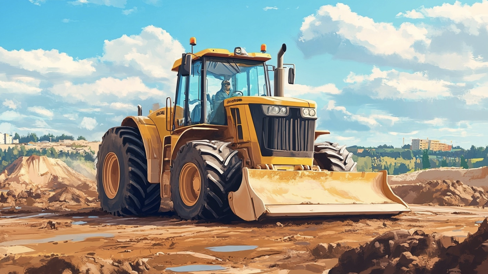
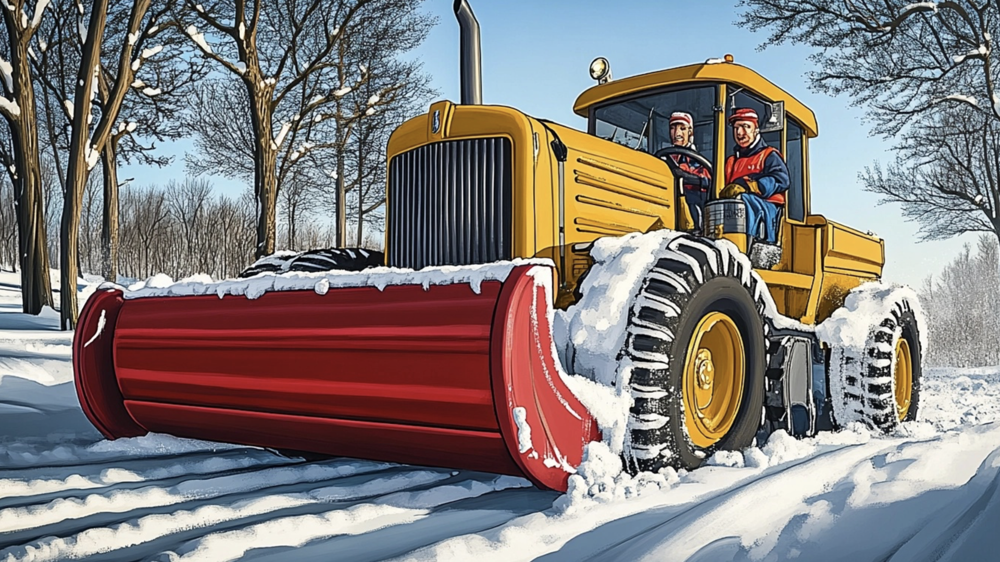
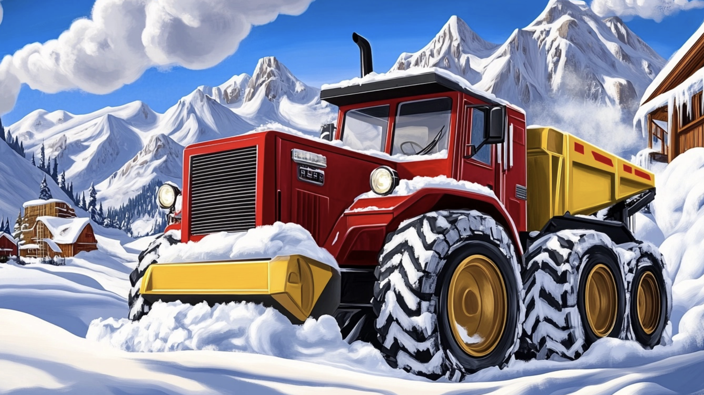

Bylo nebylo, na kraji malého městečka, v malé garáži u staveniště, žil bagr jménem Bertík. Bertík byl veselý a zvídavý bagr, který měl rád svou práci – kopal základy pro nové domy, přemísťoval hromady hlíny a občas dokonce pomáhal s opravami silnic. Měl spoustu kamarádů, kteří s ním pracovali na stavbě: nákladní auto Tomík, míchačka Milča a jeřáb Jirka.
Jednoho dne přišla zima. První sníh pokryl celé městečko i okolní kopce. Děti si stavěly sněhuláky, koulovaly se a sáňkovaly. Ale brzy se začaly objevovat problémy – sníh pokryl i silnice a lidé nemohli do práce ani do školy.
„Co budeme dělat?“ povzdychl si Tomík. „Cesty jsou zablokované a nikdo se nedostane do města.“
„To je pravda,“ přidala se Milča. „A já nemůžu odvézt beton na stavbu, protože mi zamrzla cesta.“
„Nebojte,“ řekl Bertík, který měl rád výzvy. „Určitě něco vymyslíme. Když spojíme síly, můžeme to zvládnout!“
Plán na odklizení sněhu
Bertík svolal všechny své kamarády na staveniště. Kromě Tomíka, Milči a Jirky přišel také malý smeták Samík, který zametal chodníky, a sypač Solík, který byl připravený posypat namrzlé silnice solí.
„Musíme nejprve uklidit hlavní silnice,“ začal Bertík. „Já budu odhazovat sníh ze silnice na krajnice. Tomík ho odveze pryč, Jirka pomůže zvednout těžké závěje, a Milča bude posypávat cesty pískem.“
„A co já?“ zeptal se Samík. „Nezapomněli jste na mě?“
„Ty se postaráš o chodníky, aby se po nich lidé mohli bezpečně pohybovat,“ usmál se Bertík.“
„A co já?“ přidal se Solík.
„Ty budeš sypat sůl na zamrzlé úseky, aby to nikde neklouzalo,“ řekl Bertík. „Společně to zvládneme!“
První den v akci
Hned druhý den ráno vyrazili stroje do práce. Bertík svým silným ramenem odhazoval sníh na hromady u krajnice. Tomík přivážel prázdné korby a odvážel sníh na volné pole za městem, kde nikomu nepřekážel. Jirka opatrně zvedal velké kusy zmrzlého sněhu, které by Bertík nezvládl.
Milča zatím posypávala cesty pískem, aby auta neklouzala. Samík pilně zametal chodníky a dělal radost dětem, které ho při tom sledovaly. Solík byl nejvíc pyšný, když viděl, jak jeho sůl okamžitě rozpouští led.
„Podívejte, jak jsme šikovní!“ řekl Bertík na konci prvního dne. Silnice byly opět sjízdné a chodníky bezpečné. Lidé z města jim děkovali a dokonce jim poslali horkou čokoládu a koláčky jako poděkování.

Nový problém
Jenže večer přišla další sněhová bouře. Tentokrát napadlo tolik sněhu, že dokonce i Bertík měl obavy, jestli to zvládnou.
„Tohle je hodně sněhu,“ povzdychl si Jirka. „I s naším týmem to bude trvat věčnost.“
„Nesmíme se vzdát,“ řekl Bertík rozhodně. „Ale možná bychom mohli zavolat na pomoc někoho dalšího.“
A tak se Bertík rozhodl oslovit velký odklízecí buldozer Bivoje, který pracoval v horách. Bivoj byl obrovský a velmi silný, ale málokdy opouštěl své lesy.
„Bivoji, potřebujeme tvou pomoc,“ poprosil Bertík. „Napadlo tolik sněhu, že to sami nezvládneme.“
„Hmm,“ zamručel Bivoj. „Nemám rád město, je tam příliš rušno. Ale pokud je to tak vážné, pomůžu vám.“

Záchrana města
Druhý den dorazil Bivoj na staveniště a dal se do práce. Jeho obrovská radlice odhrnovala sníh s neuvěřitelnou rychlostí. Bertík a jeho kamarádi se snažili držet krok, ale s Bivojovou pomocí práce ubíhala rychleji, než si představovali.
Za pár hodin byly hlavní silnice znovu čisté a chodníky bezpečné. Dokonce i zasněžený kopec, kde si děti hrály, byl upraven tak, aby si mohly bezpečně sáňkovat.
„Tohle byla skvělá týmová práce!“ zvolal Bertík na konci dne. „Díky tobě, Bivoji, jsme to zvládli.“
„Bylo mi ctí,“ odpověděl Bivoj. „A možná mě někdy zase zavolejte. Je příjemné vědět, že moje síla může pomoci i ve městě.“
Šťastný konec
Město bylo zachráněno a Bertík se stal místním hrdinou. Společně se svými kamarády dostal pochvalu od starosty a dokonce mu bylo slíbeno, že na jaře dostane nové barvy a malování, aby vypadal ještě krásněji.
Bertík se spokojeně usmíval. Nejenže pomohl městu, ale také ukázal, že když se spojí síly, dokáže se překonat každá překážka. A i když zima ještě nekončila, Bertík věděl, že se svými přáteli zvládne jakoukoli výzvu.
Od té doby, kdykoliv nasněžilo, Bertík a jeho tým byli vždy připraveni pomoci. A Bivoj? Ten slíbil, že přijede kdykoliv, kdy ho budou potřebovat. A tak všichni žili šťastně a spokojeně – a hlavně připraveni na jakoukoliv další sněhovou kalamitu.
Věděli jste, že...
Bagry mají jedinečný hydraulický systém, který jim umožňuje zvedat těžká břemena a pohybovat se s velkou přesností. Zajímavé je, že bagry mohou vykopat až 1000 kubíků zeminy za den, což je množství, které by ručně trvalo vykopat stovkám lidí několik týdnů!